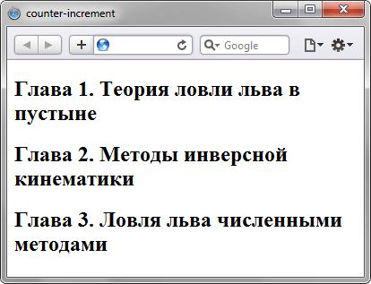

counter-increment
Стилевое свойство counter-increment предназначено для увеличения значения счётчика приращений, который задается свойством counter-reset. Такой счётчик подсчитывает количество отображений элементов на странице и может выводиться с помощью свойства content и псевдоэлементов ::after и ::before. Это позволяет создавать списки (в том числе многоуровневые), в которых нумерация и вид задаются через стили.
Краткая информация
| Значение по умолчанию | none |
|---|---|
| Наследуется | Нет |
| Применяется | Ко всем элементам |
Синтаксис
counter-increment: none | <переменная> | <число>Значения
- none
- Запрещает увеличение счётчика для текущего селектора.
- <переменная>
- Задаёт одну или несколько переменных, для которых требуется изменить значение счётчика. Переменные разделяются между собой пробелом.
- <число>
- Определяет значение приращения счётчика. По умолчанию оно равно 1. Допускается использовать только положительные целые числа, отрицательные целые числа и ноль.
Возможные сочетания значений свойств counter-reset и counter-increment показаны в табл. 1.
| Код | Результат |
|---|---|
| LI { list-style-type: none; } OL { counter-reset: list -1; } LI:before { counter-increment: list; content: counter(list) ". "; } |
Список начинается с нуля. 0, 1, 2 |
| LI { list-style-type: none; } OL { counter-reset: list; } LI:before { counter-increment: list 2; content: counter(list) ". "; } |
Выводятся все чётные числа. 2, 4, 6 |
| LI { list-style-type: none; } OL { counter-reset: list -1; } LI:before { counter-increment: list list; content: counter(list) ". "; } |
Выводятся все нечётные числа. 1, 3, 5 |
| LI { list-style-type: none; } OL { counter-reset: list 9; } LI:before { counter-increment: list; content: counter(list) ". "; } |
Список начинается с 10. 10, 11, 12 |
Пример
<!DOCTYPE html>
<html>
<head>
<meta charset="utf-8">
<title>counter-increment</title>
<style>
body {
counter-reset: heading; /* Инициируем счетчик */
}
h2:before {
counter-increment: heading; /* Указываем идентификатор счетчика */
content: "Глава " counter(heading) ". "; /* Выводим текст перед содержимым тега <h2> */
}
</style>
</head>
<body>
<h2>Теория ловли льва в пустыне</h2>
<h2>Методы инверсной кинематики</h2>
<h2>Ловля льва численными методами</h2>
</body>
</html>Результат данного примера показан на рис. 1.

Рис. 1. Применение свойства counter-increment
Объектная модель
Объект.style.counterIncrement
Примечание
Для элементов, у которых установлено display: none, значение счётчика не меняется.
Спецификация
| Спецификация | Статус |
|---|---|
| CSS Lists and Counters Module Level 3 | Рабочий проект |
| CSS Level 2 (Revision 1) | Рекомендация |
Браузеры
| Internet Explorer | Chrome | Opera | Safari | Firefox |
| 8 | 2 | 9.2 | 3 | 1 |
| Android | Firefox Mobile | Opera Mobile | Safari Mobile |
| 2.1 | 1 | 9.5 | 3 |